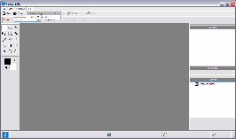

Fotografix Portable Help
A small but powerful image editor.
Fotografix Portable is packaged with a PortableApps.com launcher as a portable app, so you can edit images on your iPod, USB flash drive, portable hard drive, etc. It has all the same features as Fotografix, plus, it leaves no personal information behind on the machine you run it on, so you can take it with you wherever you go. Learn more about Fotografix...
Thank you for using FotografixPortable. Choose a topic from the left frame to learn more, or find out what's new in Fotografix 1.5.
Click on the picture below to see how to change Fotografix's language file from English to your own.
{kind=link}
Note: If the language file that you need is not included with FotografixPortable, you can translate the default English language file (lang_en.ini) to your language. If you do make a translation file please drop a comment with the translation code using <pre></pre> to incase it for it is a long code.
Go to the Fotografix Portable Homepage >>
Get more portable apps at PortableApps.com
This software is OSI Certified Open Source Software. OSI Certified is a certification mark of the Open Source Initiative.